WebSite PSeInt
Rubén Plazas, Juan Maria Nolasco y Pablo SutilBases de datos

Para más información vaya al menú "base de datos"
Programación

Para más información vaya al menú "Programación"
Desarrollo Web

Para más información vaya al menú "Desarrollo Web"
Contacto

Para más información vaya al menú "Contacto"
PSeInt
¿Que es?
-Oracle
Oracle es una herramienta para la gestión de bases de datos, usada principalmente por las grandes empresas para que estas puedan controlar y gestionar una gran cantidad de contenidos desde un solo archivo.
-MySQL
MySQL sirve para almacenar toda la información que se desee en bases de datos relacionales, como también para administrar todos estos datos sin apenas complicaciones gracias a su interfaz visual y a todas las opciones y herramientas de las que dispone.
NoSQL
NoSQL (a veces llamado "no solo SQL") es una amplia clase de sistemas de gestión de bases de datos que difieren del modelo clásico de SGBDR (Sistema de Gestión de Bases de Datos Relacionales) en aspectos importantes, siendo el más destacado que no usan SQL como lenguaje principal de consultas.-Redis
Redis es un motor de base de datos en memoria, basado en el almacenamiento en tablas de hashes (clave/valor) pero que opcionalmente puede ser usada como una base de datos durable o persistente.
-Mongo DB
MongoDB es una base de datos distribuida, basada en documentos y de uso general que ha sido diseñada para desarrolladores de aplicaciones modernas y para la era de la nube.
-Firebase
Firebase Realtime Database es una base de datos alojada en la nube. Los datos se almacenan en formato JSON y se sincronizan en tiempo real con cada cliente conectado.
Funciones
-Basicas
A continuacion veremos las funciones mas básicas de PSeInt
- Definir
- Escribir Esta parte es la del codigo, la funcion de escritura se añade dandole click a 'Escribir' en la barra izquierda. 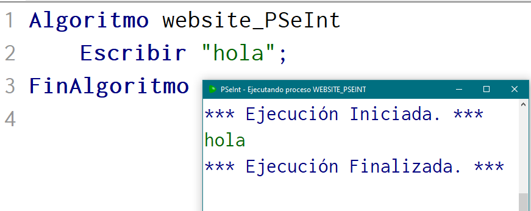
- Leer
- Asignar
PSeInt te permite definir una variable como numero real, con comas, como un caracter...

Definir como Caracter = Defines como una palabra/letra, encerrado en comillas ("...")
Definir como Entero = Defines como un numero entero, sin puntos o comandos
Definir como Logico = Defines como Boolean, o es Verdado, o Falso.. (V/F)
Definir como Real = Defines como un numero, pero este si admite comas o puntos
Puedes añadir una palabra entre comillas o por ejemplo una funcion que hayas leido antes

La función 'Leer' permite al IDE leer una frase introducida en la consola de comandos, la cual quedará guardada en la variable cuyo nombre se defina despues de leer.
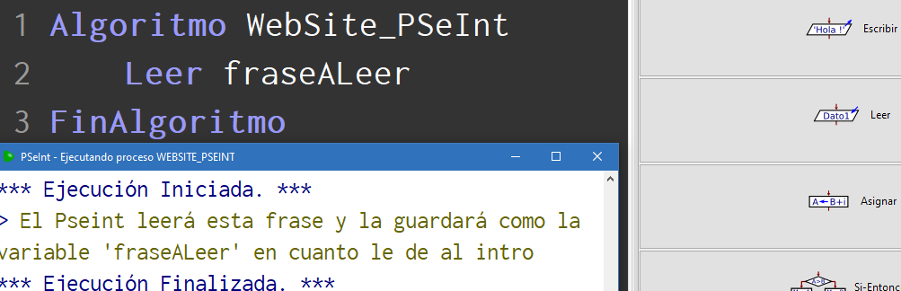
Esta imagen representa el ejemplo de como leer una frase introducida en la consola de ejecución, y que luego el PSeInt guardará en la variable 'fraseALeer'
La funcion 'Asignar' sirve para darle un valor a una variable mediante una expresion, puede ser un valor introducido en la propia expresion, o asignarle otra variable creada anteriormente.
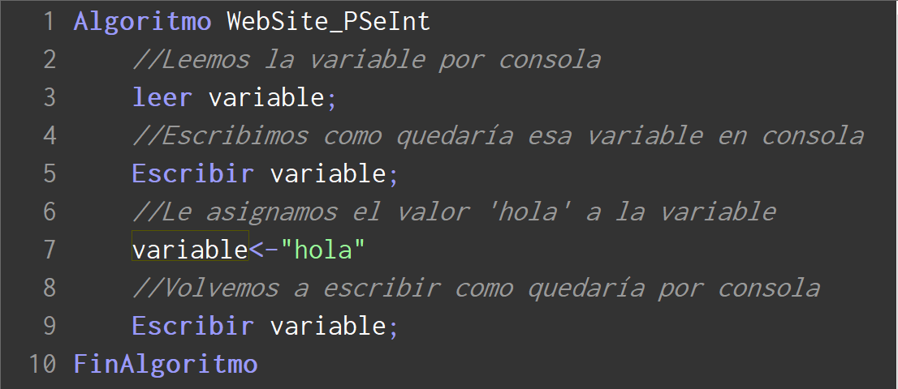En esta imagen podemos ver que le asignamos a 'variable' la palabra 'hola'. Vamos a ejecutar el código para que se vea la diferencia entre el primer valor de 'variable' y el segundo.
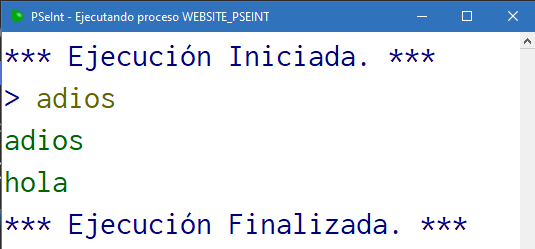
Como se puede apreciar, al leer la variable le hemos introducido el valor 'adios', pero cuando le hemos asignado el valor 'hola' a la variable, se ha cambiado ese 'hola' por el 'adios' que le hemos asignado
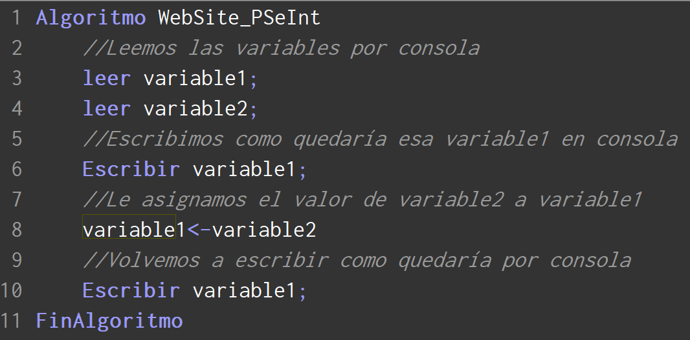 En este codigo vamos a hacer el segundo ejemplo de asignacion que habiamos hablado, en este caso vamos a leer 2 variable, y vamos a asignarle una de las que leamos a la otra...
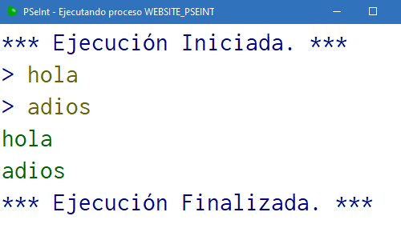
Como podemos comprobar, a 'variable1' le hemos asginado el valor 'hola', y ha 'variable2' el valor 'adios'. De primeras 'variable1' contenia 'hola', pero cuando le hemos asignado el valor de 'variable2' a 'variable1', ese 'hola' a sido reemplazado por un 'adios'
-Estructuras de Control
- Si-Entonces
- Segun
Es una sentencia de control que implica que se pueda realizar una accion en funcion de cumplirse un caso determinado y permite asignar un valor por defecto en caso de que no se cumpliera dicho caso
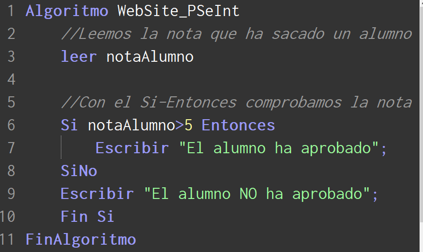Aqui podemos ver un ejemplo donde vamos a calcular la nota de un alumno. Si la nota es mayor de 5, esta aprobado, pero de lo contrario, esta suspendido
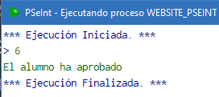 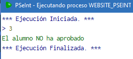
Ejemplos de ejecucion del codigo
Esta sentencia de control es como el Si-Entonces, pero ofrece muchos casos en vez de uno. Tambien te permite meter un caso por defecto en caso de que no se cumpla el resto
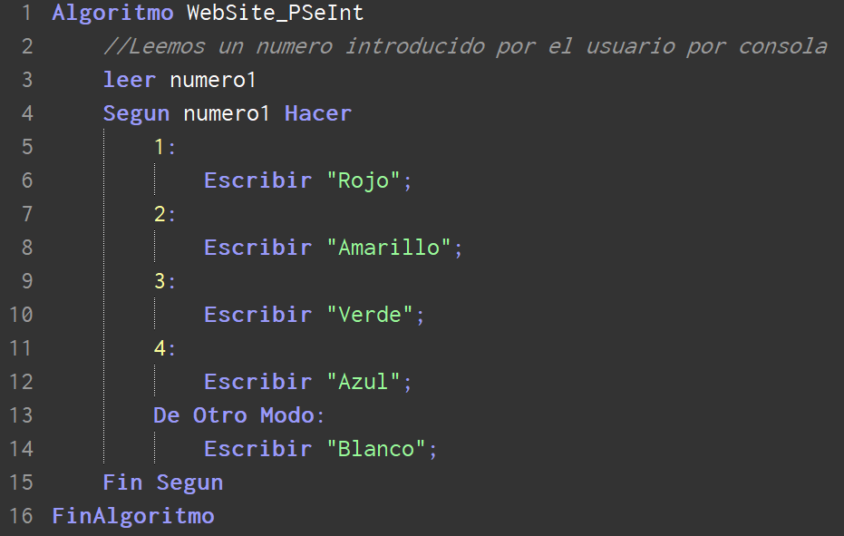Tenemos un codigo con el que le pasamos un numero a través de la consola, y nos devuelve un color
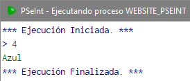 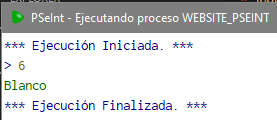
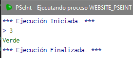

Aqui tenemos varios ejemplos de ejecucion del codigo
-Bucles
- Mientras
- Repetir
- Para
Es el primer bucle que vamos a ver. Lo que te permite un bucle es realizar una accion un numero indeterminado de veces mientras se cumpla una expresion logica, o se cumpla una expresion de salida de bucle
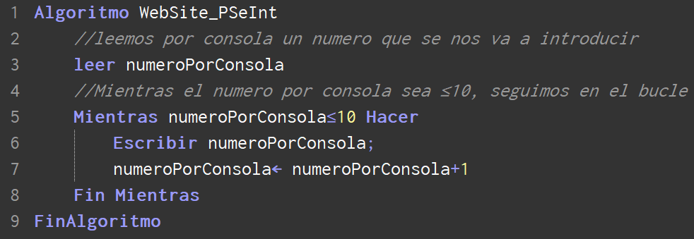En este codigo, el PSeInt va a escribir el numero introducido hasta 10, independientemente de en que numero empieze
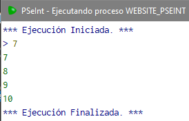 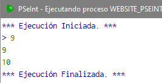
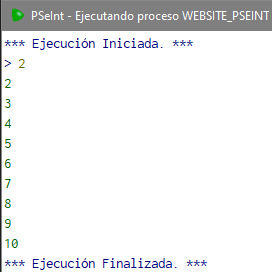 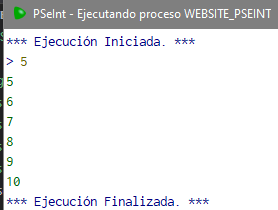
Podemos ver como efectivamente van saliendo todos los numeros hasta que llega a 10 , donde se detiene la ejecución
Este es un bucle mas propiamente dicho, dado que repite una secuencia de acciónes hasta que se cumpla una expresion lógica, en caso de no cumplirse, seguirá ejecutando las acciones
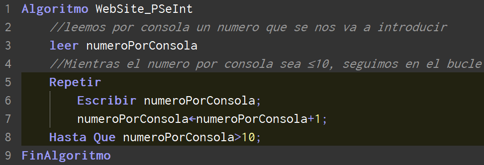 Hemos cogido el mismo ejemplo de antes, pero con 'Repetir'. Introduces un numero, y este se irá incrementando hasta ser =10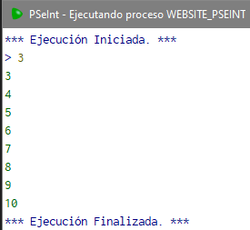 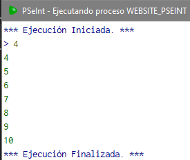
 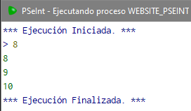
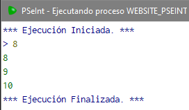
Ejemplos de codigo, que verifican que el codigo llega hasta 10 desde el numero introducido por consola, y finaliza el codigo
Nos permite ejecutar pasos a un ritmo que nosotros queramos, con una variable final y una variable numerica a la que le asignamos un valor principal. Mientras ira ejecutando una secuencia de acciones
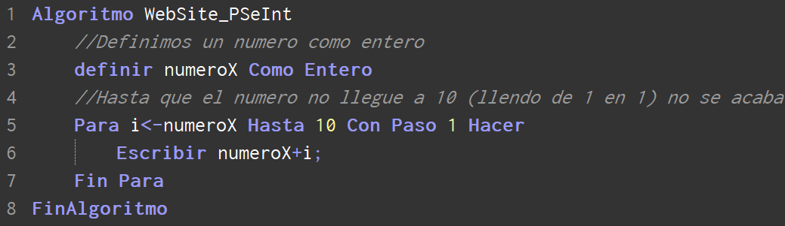 Aqui tenemos el codigo que, como en los ejemplos anterioes, vamos a hacer que se muestren todos los numeros hasta el 10
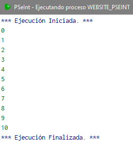
-Diagramas De Flujo
- NodeJS
- Spring Java
- Java Servlets
Desarrollo Web
HTML5
HTML5 es un estándar que sirve como referencia del software que conecta con la elaboración de páginas web en sus diferentes versiones, define una estructura básica y un código (denominado HTML) para la definición de contenido de una página web, como texto, imágenes, vídeos, juegos, entre otros…JavaScript Vanilla
Vanilla JavaScript es como se conoce al lenguaje JavaScript cuando se utiliza sin ninguna librería o framework.CSS3
CSS significa Cascade Style Sheets, también llamado Hojas de Estilo en Cascada. CSS es un lenguaje de marcado que se emplea para dar formato a un sitio web. Es decir, funciona en conjunto con los archivos HTML.WebApps
El concepto de WebApp se define por ser una versión de la página web adaptada y optimizada para cualquier dispositivo móvil, sin una previa instalación y la posibilidad de abrirla desde cualquier navegador sin importar el sistema operativo que estés utilizando.Sobre mi
Contacto
También puedes enviarme un email a la dirección: